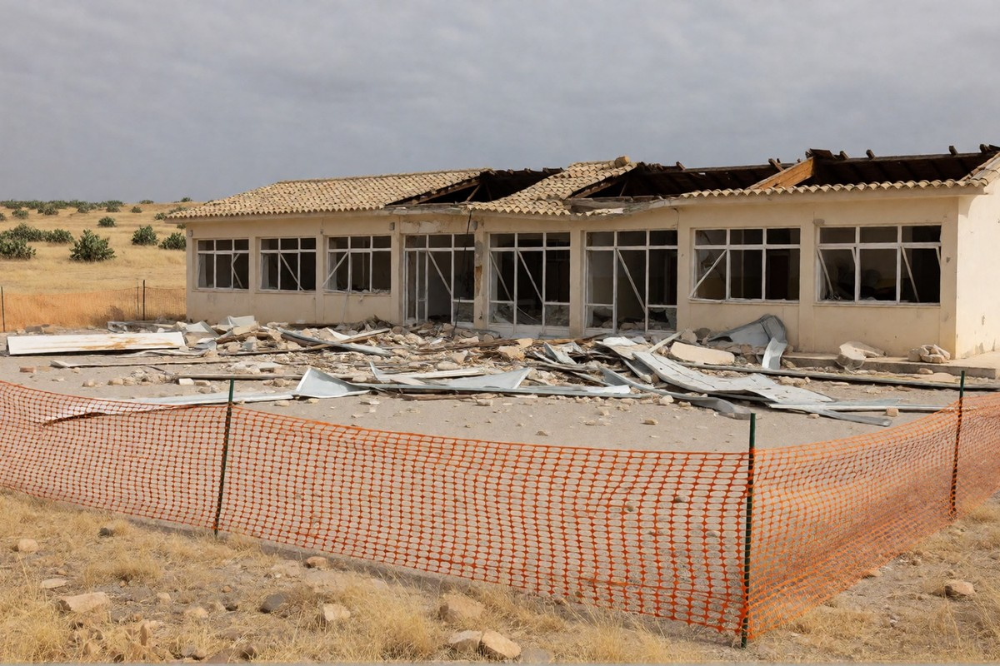

Sicilia · 26 novembre 2026
Marsala, 3,5 milioni per la scuola distrutta dalla tromba marina

Il decreto del ministero dell'Istruzione finanzia la ricostruzione dell'istituto De Gasperi - De Vita, colpito il 9 ottobre con 273 bambini in classe. Attestato di merito al dirigente e a tre insegnanti.
di Franco Zanghì
Tre milioni e mezzo di euro per ricostruire la scuola di Marsala devastata dalla tromba marina del 9 ottobre 2026. Il decreto porta la firma del ministro dell'Istruzione e del Merito, Giuseppe Valditara, ed è stato annunciato giovedì 26 novembre a Roma.
I soldi vanno al Comune di Marsala, per gli interventi urgenti di ripristino dell'edificio scolastico e della palestra di Terrenove, dell'istituto comprensivo «De Gasperi - De Vita». La sindaca Andreana Patti aveva ricevuto la comunicazione ufficiale dal ministero il 24 novembre.
Quella mattina di ottobre
La tromba marina ha colpito la scuola mentre i bambini erano in classe. Erano 273. Le insegnanti e il personale li hanno messi tutti al sicuro. L'edificio, gravemente danneggiato, è stato dichiarato inagibile.
Per questo, a Roma, il ministro ha ricevuto una delegazione della scuola: il dirigente Leonardo Gullotta e tre insegnanti, Ilenia Amato, Roberta Parrinello e Francesca Amari. A loro ha consegnato un attestato di merito.
«Con un coraggio esemplare, dedizione e forza d'animo avete protetto la vita dei vostri alunni», ha detto Valditara. «Ora restituiamo a questi ragazzi e alla comunità di Marsala la loro scuola».
Dove stanno adesso gli alunni
Nel frattempo le classi sono state distribuite. Dal 23 novembre è stato aperto il plesso di Strasatti, che ha una capienza massima di 150 alunni e ha permesso di chiudere i doppi turni; alcune classi restano al plesso Fornara e sei sono da settimane all'istituto Santa Chiara. Il plesso Pastorella è stato giudicato inidoneo e serve ancora un progetto.
I soldi della Regione
All'incontro c'era anche l'assessore regionale all'Istruzione, Mimmo Turano, che parla di un passo avanti fondamentale. Turano ricorda che la Regione, con la variazione di bilancio approvata circa un mese fa dall'Assemblea regionale, ha stanziato altri 5 milioni per i territori di Marsala e Petrosino. «Ora vigileremo affinché la ricostruzione possa avvenire nel più breve tempo possibile», ha detto.
Il dato dei 5 milioni regionali compare soltanto nella dichiarazione dell'assessore, e non nel comunicato del ministero: va attribuito a lui.
Una cosa va detta chiara: i soldi sono il primo passo, non la scuola. Sono passati quasi due mesi dalla tromba marina, e adesso contano i tempi dei lavori.
Fonti
- ANSA Sicilia, «Maltempo, 3,5 milioni da Valditara per ricostruire la scuola di Marsala», 26 novembre 2026
- ANSA Sicilia, «Turano, da Ministero Istruzione 3,5 milioni per scuola colpita da tornado», 26 novembre 2026
- Ministero dell'Istruzione e del Merito, comunicato «Scuola, Marsala: Valditara firma decreto che stanzia 3,5 milioni», 26 novembre 2026
- BlogSicilia, «Scuola devastata dal tornado a Marsala, sbloccati 3,5 milioni da Roma», 27 novembre 2026
- Quotidiano di Sicilia, «Marsala, Valditara firma il decreto», 26 novembre 2026
- LaTr3, «Tornado a Marsala, dal Ministero 3,5 milioni di euro per ricostruire la scuola», 24 novembre 2026
- Tp24, «Marsala, gli alunni della De Gasperi-De Vita tornano a scuola a Strasatti: stop ai doppi turni», 23 novembre 2026
Le fonti usano indifferentemente «tromba marina», «tromba d'aria» e «tornado»: negli atti ufficiali il termine è tromba marina. Sul cognome del dirigente scolastico la grafia prevalente è Gullotta, ma una testata locale scrive Gulotta. Il comunicato del ministero non indica i nomi del dirigente e delle insegnanti, che arrivano dal dispaccio dell'ANSA e dalle cronache locali.